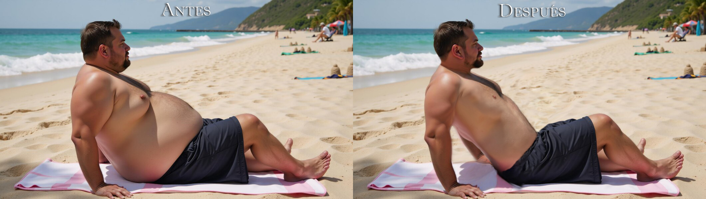
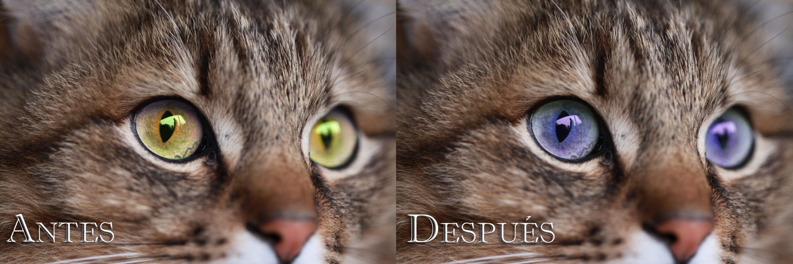
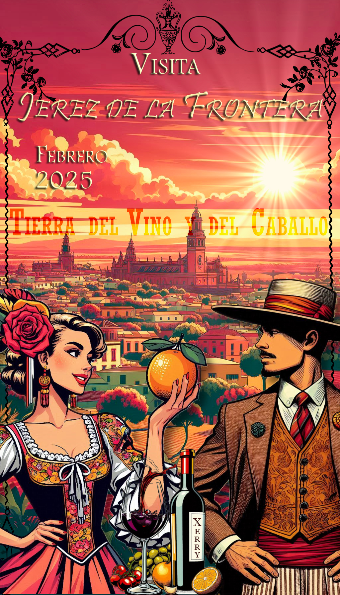

Contenido Multimedia







Imágenes creadas y editadas | Usa las flechas para explorar el portafolio
Creación y modificación de imágenes con herramientas manuales e IA.
Esta sección agrupa varias actividades en las cuales se crearon o modificaron imágenes a través de herramientas de edición como Gimp y Photoshop, así como mediante el uso de Inteligencia Artificial.
En este caso, los proyectos incluyen retoques corporales o faciales, sustitución de personas en las fotos y creación de carteles, entre los cuales destaca el ganador al Primer Lugar de la XVIII Semana Técnica del Colegio La Salle.



Imágenes creadas y editadas | Usa las flechas para explorar el portafolio